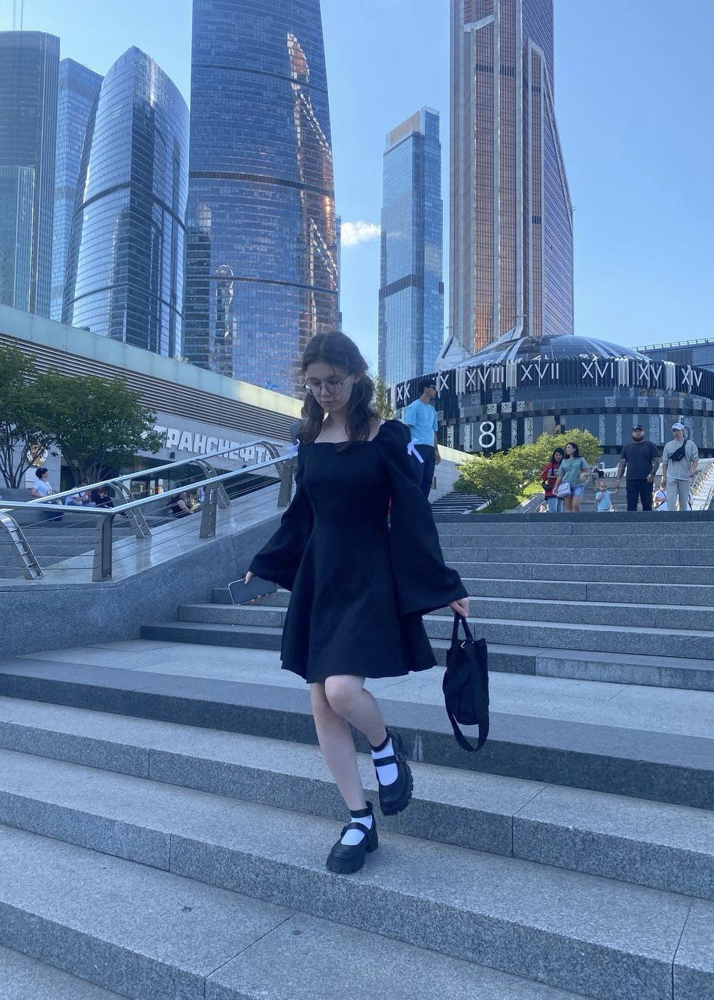
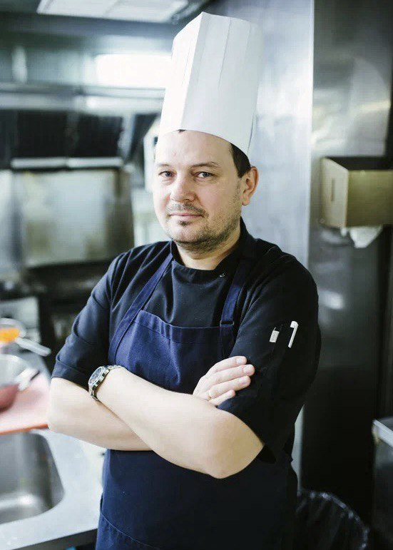
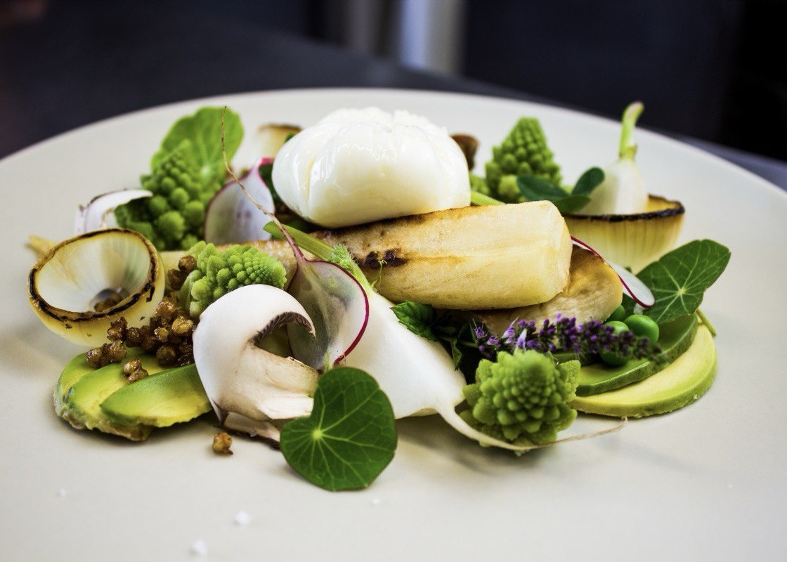
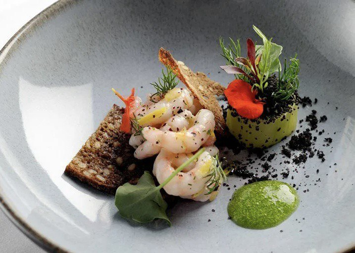
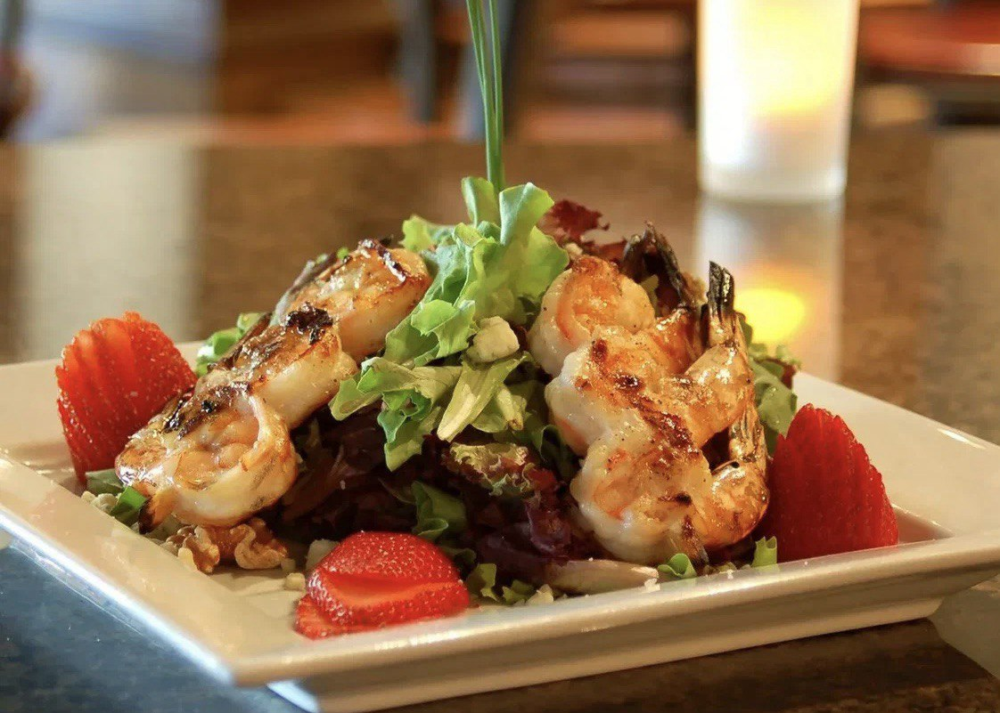
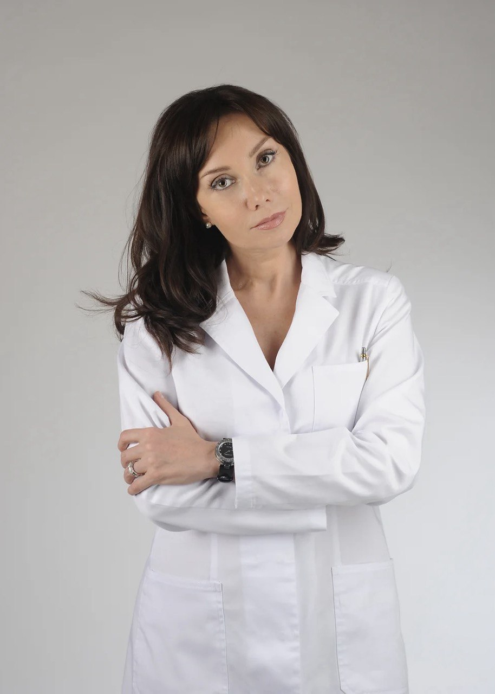
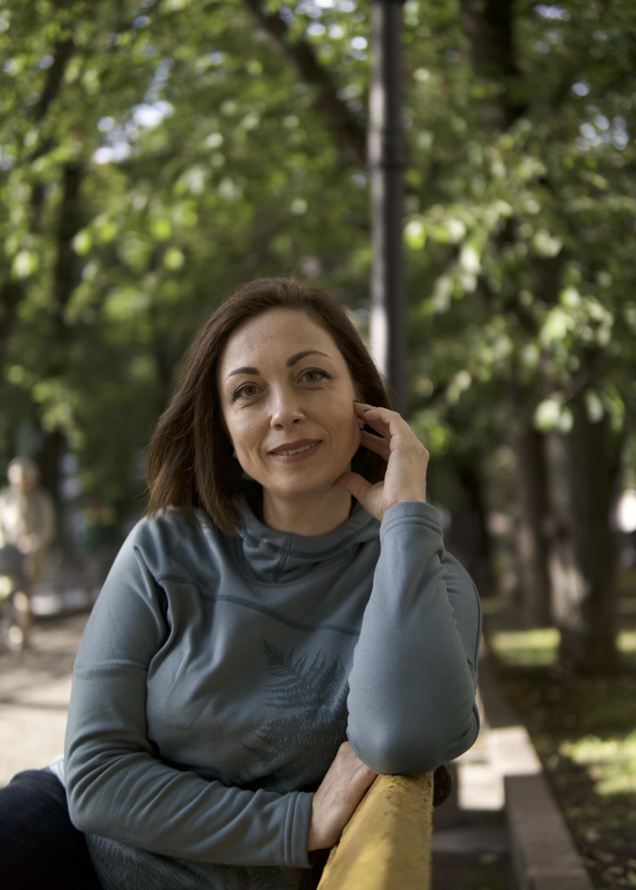

Проект PerfectPlate
PerfectPlate — это команда профессионалов, объединенных общей целью: предоставить клиентам высококачественное питание, которое сочетает в себе вкус, здоровье и удобство. Наша команда состоит из экспертов в области кулинарии, диетологии, маркетинга и логистики.

Софья Дмитриевна — Генеральный директор.
- Опыт работы в сфере управления проектами и стартапами более 10 лет.
- Обладает стратегическим мышлением и лидерскими качествами.
- Успешно запустила несколько проектов в области фуд-технологий.
Известные проекты:
MealMaster — ваш личный планировщик питания
FoodTech Academy — обучающие курсы по фуд-технологиям

Алексей Иванович — Шеф-повар
- Более 15 лет опыта работы в лучших ресторанах страны.
- Специализируется на разработке меню с акцентом на здоровое питание и использование органических продуктов.
- Участник кулинарных конкурсов и мастер-классов
Некоторые его блюда:
  

Екатерина Алексеевна — Диетолог
- Сертифицированный диетолог с опытом работы более 8 лет.
- Разрабатывает индивидуальные планы питания для клиентов с учетом их потребностей и целей.
- Публикации в специализированных изданиях по вопросам питания и здоровья.

Анастасия Сергеевна — Маркетолог
- Эксперт в области цифрового маркетинга с опытом работы более 7 лет.
- Разработалa успешные рекламные кампании для нескольких брендов в сфере фуд-индустрии.
- Понимает потребности целевой аудитории и использует современные инструменты для привлечения клиентов.
Достижения
- Запуск проекта: Успешный запуск PerfectPlate за рекордные 6 месяцев с момента идеи до реализации.
- Рост клиентов: За первый год работы мы привлекли более 500 постоянных клиентов и достигли уровня удержания клиентов на уровне 85%.
- Партнерство с местными фермами: Установили сотрудничество с более чем 10 местными фермами для обеспечения свежих и органических ингредиентов.
- Разработка уникального меню: Создали более 50 уникальных блюд, которые получили положительные отзывы от клиентов, включая вегетарианские и безглютеновые опции.
- Медийное признание: Получили упоминания в популярных изданиях о еде и здоровье, таких как "Здоровое питание" и "Гастроном".